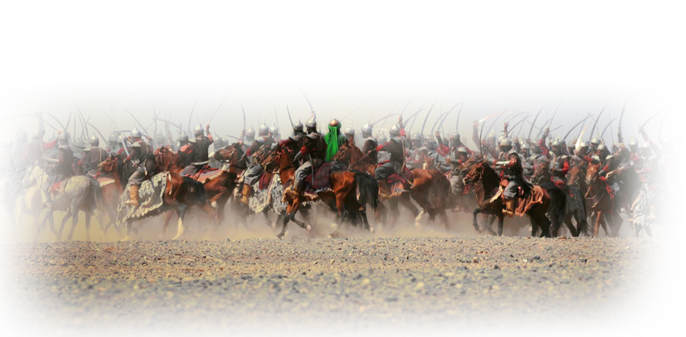

The collision of good versus evil epitomized in a massacre never witnessed in history on so many fronts.
On the one side, the worldly materialistic strengths of power, greed and obsession. On the other side, the universal principles of truth, freedom and social justice under the flagship of humanity.
Can one man stand against open tyranny and more importantly, become the victor?
The Holy Prophet of Islam passed away in 632AD.
The half-century that followed saw political unrest, dispute, anxiety and a social struggle within the Islamic community.
One political maneuver was the appointment of a man called Mu’awiya by the then second Caliph, Umar, to become Governor of Syria as the Muslims had captured that territory from the Byzantines.
Mu’awiya was a power hungry man.
He grew up in a family known for worldly and materialistic desire.
Once appointed, he took advantage of the rich public treasury of Syria using it personally to buy favors and influence people.
More importantly, Mu’awiya wanted his own dynasty.
He created a strong network to target and fight against a man called Ali, the son-in-law of the late Holy Prophet.
Ali, on the other hand, was a pious man. Highly regarded and adored within all communities for his knowledge, devotion and loyalty to the Holy Prophet.
He was a man who treated everyone equally, even forgiving his defeated enemies after battle.
When Ali became the fourth Caliph, he decided to remove Mu’awiya immediately, notwithstanding Mu’awiya’s strong base of support.
Mu’awiya defied the Caliphate of Imam Ali and refused to obey his orders and established a parallel government in Greater Syria including Palestine and Jordan.
With the power and authority gained as governor for seventeen years, Mu’awiya now began a constant and malicious campaign of hate, lies and deceit against Imam Ali even falsely blaming him for the killing of Uthman.
As the Caliph in charge, Imam Ali could not ignore the situation; he had to act to restore peace and order.
The defying Mu'awiya continued to violate the public treasury for espionage and buying peoples' loyalty. The people of Syria fully believed him and the false picture he presented.
Ultimately this resulted in battle.
Imam Ali’s generals nearing victory were instructed to stop and attempt a final term for negotiation.
However, not only did negotiations fail, but a large group, the Kharijites, defected Imam Ali.
Mu’awiya’s army moved on, overpowering Egypt and Yemen, areas that Imam Ali’s governors could not prevent.
In 661AD, a Khariji man attacked and fatally wounded Imam Ali with a poisoned sword as the Imam bowed during prayer in the month of Ramadan at the Mosque of Kufa
Imam Ali died two days later, on the 21st Ramadan in the city of Kufa.
The Islamic community in mourning now chose Hassan, the elder of Imam Ali’s two sons, to become the legitimate ruler.
As soon as the news of Imam Hassan’s selection reached Mu’awiya, who had been fighting ‘Imam Ali for the Caliphate’ he condemned the selection and declared his decision not to recognise him.
Imam Hassan knew how his father Imam Ali stood like a lion in all difficulties and fought battles against Mu'awiya, but these confrontations had resulted in heavy casualties on both sides.
Considering all circumstances, Imam Hassan discussed the matter with his younger brother Hussain and other relatives.
He revealed to them that in order to end the bloodshed and to provide a reasonable safety and security to the Muslim community, he would make ‘Terms of Reconciliation’ with Mu'awiya and abdicate until after Mu'awiya's death at which time the community can again decide who should be the rightful leader.
The two noteworthy terms dictated by Imam Hassan and agreed by Mu’awiya were:
1. Mu'awiya to immediately stop the use of abusive language towards the Ahlul Bayt.
2. Mu'awiya shall not appoint anyone as his successor as that would be left for the people to decide.
Upon signing the Terms of Reconciliation, Mu’awiya disregarded the terms. He planned to kill Imam Hassan and ensure his dynasty was paved through his son, Yazid.
Yazid however was the playboy of the time, with habits including gambling, heavy drinking unethical indulgence.
Mu'awiya sent one of his agents to contact Imam Hassan's wife Joda and convinced her to put a little poison in Imam Hassan's food in return for wealth and worldly goods.
She found the offer too attractive to ignore.
As soon as the Imam took the poisoned honey he became seriously ill, passing away in 670AD.
Imam Hussain, carried on with his mission of teaching Islam as before.
A large number of people kept coming to see him and to learn from him. This process continued for several years.
However, Mu’awiya in his old age now began a campaign to introduce Monarchy into the structure of Islam allowing his son Yazid to become the next leader of the Islamic community.
People began to protest. There was anger everywhere.
Upon Mu'awiya's death, Yazid, 30 years old, managed to impose himself on the people to become the Caliph.
At first people refused to accept him as a representative of the Holy Prophet of Islam but Yazid, like his father, used all possible means like bribery, coercion, pressure, threats and force to receive the people's acceptance of him as the legitimate ruler.
Many people were worried, threats to their lives and livelihood were too menacing to ignore, so they grudgingly and reluctantly gave in.
Islam was now under tyrannical governance.
However, Imam Hussain and his family (who practiced Islam in its true sense) did not give in.
By 680AD, the Holy Prophets bloodline and succession was under tremendous threat through the open tyranny and new corrupt governance of Yazid.
The Grandson of the Holy Prophet, Imam Hussain, could not follow the open tyrannical governance of Yazid.
Despite Yazid's intimidating military power the Imam stood firm in his resolve and chose to challenge the Umayyad dynasty.
Therefore, with his family and a few companions, he decided to leave Mecca for Kufa.
Diverted through his travel towards Kufa where he had support, Hussain and members of the Holy Prophet’s family were forced by a legion of a thousand horseman led by Hurr and ordered by Yazid, to pitch on a dry land with no access to water.
This land was called Karbala.
Additional military units were soon sent to Karbala.
A legion of 30,000 armed soldiers of Yazid were facing a 72-man caravan of Hussain with women and children, deprived of water.
After a week, Yazid sends a blood driven message that no one was to leave Karbala unless they swore an oath of allegiance to him.
Hussain and his followers remained true to the principles set by the Holy Prophet of Islam. They could not make the allegiance.
On the 9th night, Hussain gathered his followers and told them,
"the enemy is interested in none but me, me alone. I'll be most delighted to permit each and every one of you to go back, and I urge you to do so...."
All companions responded;
"We will either live with you or die together with you."
No one left. All remained.
The air of sacrifice had now become apparent.
Family members looked at each other and then their children.
The avoidable had now become unavoidable.
The 10th day began.
Hurr felt his conscience violently stir within his heart. He quickly broke away from the army of Yazid and joined the few companions with Imam Hussain.
With his eyes cast down, he solemnly asked for forgiveness for the role he played as commander, to which Imam Hussain replied,
“Yes, he will accept your repentance”.
Hurr’s defection worried the army of Yazid in case others were to do the same.
Umar ibn Sa’ad threw an arrow in the air to quickly indicate the start of what would be nothing less than a bloodthirsty, egotistic driven massacre.
One by one, thirsty and tired, Hussain’s companions, family members and children entered the arena for single combat.
One by one, thirsty and tired, they sacrificed their lives in Karbala to save Islam.
Imam Hussain, with his own eyes, saw all his beloved ones cut to pieces, including children.
The Imam even held his six-month baby son, Ali Asghar, to awaken the conscience of the soldiers.
The baby was zoomed with a tri-edged arrow to the throat and died instantly.
Imam Hussain was now alone.
The enemy troops began to surround him but there was apprehension. No one dared make the final move.
The silence was broken when Shimr screamed for the final attack. An animalistic scream, the type that makes your blood curdle.
Imam Hussain entered again and again, fighting and pushing the enemy back. But when the enemy stood between him and his caravan, he turned and said, “If you don’t believe in any religion and don’t fear the Day of Resurrection,
at least be free and noble in this world”.
Fatigued, thirsty and through further attacks, he fell onto the ground as the women and children looked on.
Shimr came forward and severed Imam Hussain’s noble head from the body, the noble head kissed often by the Holy Prophet of Islam.
Shimr and others had the audacity to carry it on the tip of a spear to Yazid, 600 miles away.
All that remained in Karbala was a blood soaked massacre scene.
This was the leftover of the beloved family of Prophet Mohammad (s.a.w). Left in such a deplorable unimaginable condition and all caused by people who called themselves Muslims!
Yet at no point before his death did Imam Hussain side with the open tyrannical governance of Yazid.
Soon Imam Hussain’s actions turned into a triumph.
He was a beacon of light preserving the universal principles of truth, freedom and social justice as set by the Holy Prophet of Islam.
Imam Hussain ensured truth remain the victor over falsehood.
Moreover, the massacre at Karbala stirred the consciousness for both the ignorant and learned alike as the actions and intentions of the Umayyad dynasty was now apparent for all to see.
Yazid never achieved what his father had planned. He died within three years by falling off a horse and was buried in a back street tomb in Damascus, Syria.
As for the Umayyad dynasty, it crumbled soon after.